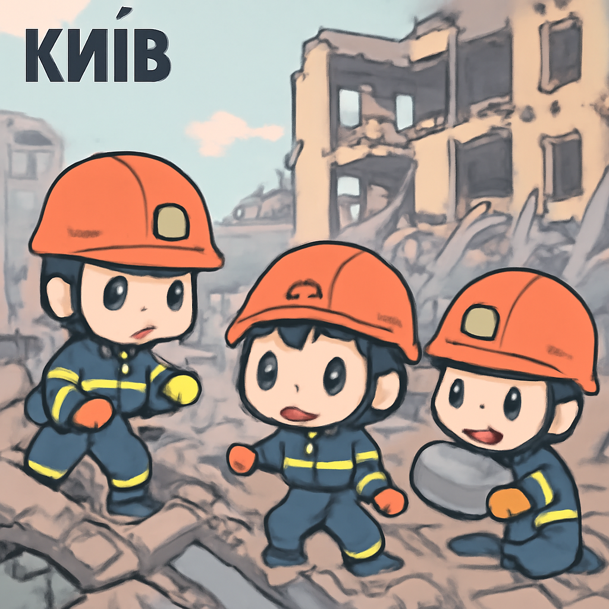

其一 · 烏克蘭基輔 · 俄羅斯空襲造成重大傷亡
基輔遭俄羅斯空襲，至少16人遇難

在烏克蘭首都基輔，最近發生了大規模的俄羅斯無人機與導彈攻擊，造成至少16人喪生，其中包括兩名兒童。這次襲擊再次加劇了戰爭的悲劇，也讓國際社會對俄國的行為感到擔憂。希望未來能看到和平的曙光，否則我們的心情就像是在烏克蘭的冬天一樣，冷得讓人發抖。
🔗 原始新聞 ↗
2026-05-15 · 以古觀今，以笑抗愁
基輔遭俄羅斯空襲，至少16人遇難

在烏克蘭首都基輔，最近發生了大規模的俄羅斯無人機與導彈攻擊，造成至少16人喪生，其中包括兩名兒童。這次襲擊再次加劇了戰爭的悲劇，也讓國際社會對俄國的行為感到擔憂。希望未來能看到和平的曙光，否則我們的心情就像是在烏克蘭的冬天一樣，冷得讓人發抖。
🔗 原始新聞 ↗
伊朗軍方扣留一艘浮動武器庫船隻
在阿曼灣，伊朗軍方已經扣留了一艘被稱為“浮動武器庫”的船隻。這艘船的扣留再次引發了國際間對於海上安全的關注，也讓人擔心這是否預示著局勢的再度升級。看來海上的“和平船”最近真是水深火熱，連浮動武器庫都無法逃過一劫。
🔗 原始新聞 ↗
特朗普訪華，兩國領導人笑臉相迎但議題複雜
美國總統特朗普最近訪問中國，與習近平會面。雖然兩位領導人在鏡頭前笑得如陽光般燦爛，但背後的貿易與政治問題卻依然棘手。這次會面可能會影響兩國未來的關係，尤其是在貿易與台灣問題上。希望他們能找到共識，不然未來的對話可能會變得像中午的熱浪一樣，讓人喘不過氣來。
🔗 原始新聞 ↗
英國首相面臨內部挑戰，未來不明朗
英國首相基爾·斯塔默的政權受到挑戰，因為健康部長韋斯·斯特里丁最近辭職，呼籲領導層競爭。這一政治風波可能會影響到英國的政策走向，尤其是在脆弱的經濟環境下。看來，英國的政治舞台就像一場戲，演員們不斷更換，但劇情依然讓人捉摸不透。
🔗 原始新聞 ↗
科學家警告全球可能面臨創紀錄的高溫
隨著厄爾尼諾現象的發展，科學家預測今年全球氣溫可能會創下新高。這不僅影響氣候，也可能對農業與水資源造成重大衝擊。看來，地球這位老朋友最近有點發燒，我們可得趕快調整心情，準備面對更熱的未來。
🔗 原始新聞 ↗